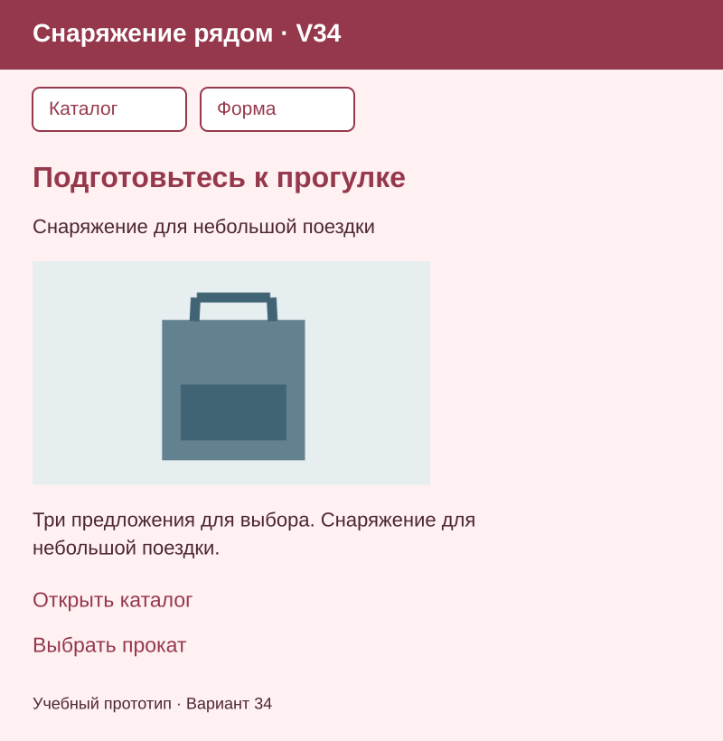
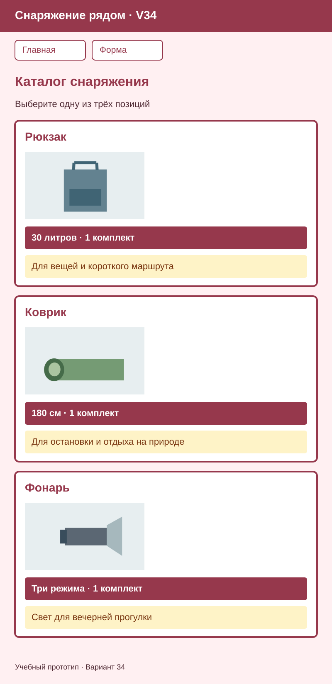
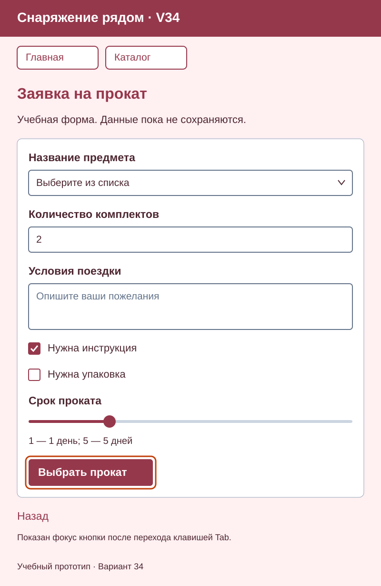
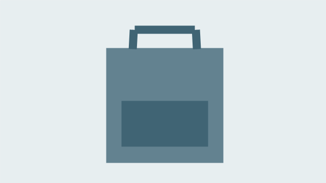
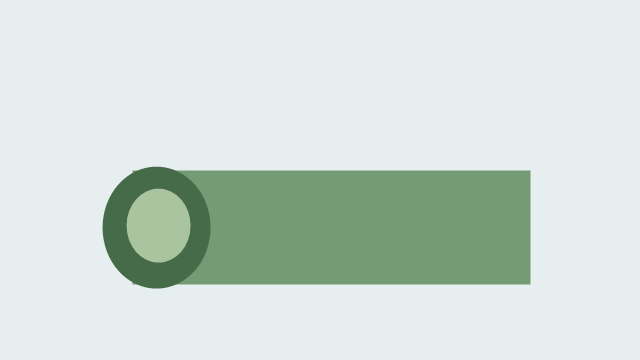
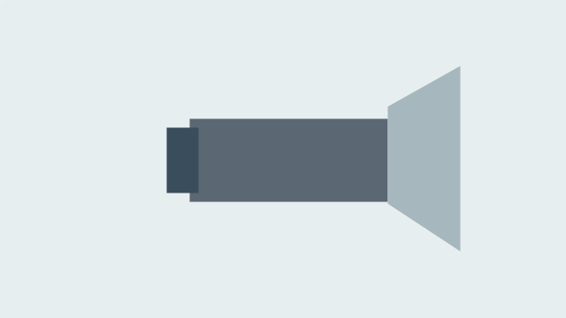

Вариант 34 — Снаряжение рядом, пара 16
Оформление карточек и формы. Продолжайте папку Variant34-web. Сохраните свой номер, тексты, изображения, порядок и начальные значения. Фамилия в приложении не требуется.
Статья объясняет способ выполнения; Вариант 00 показывает работу преподавателя. Здесь — самостоятельное задание вашего номера.
Задание
Оформите все три страницы в общей палитре своего номера. У карточек — белая поверхность и акцентная рамка, у характеристик — тёмный акцент и белый текст, у описаний — светлый жёлтый фон. Оформите форму, подписи, кнопку и видимый фокус с клавиатуры. Карточки и поля остаются сверху вниз. Дополняйте прежний CSS по статье; тексты, поля и ограничения ввода сохраните.
Ориентир оформления
Главная

Каталог

Форма

Схемы показывают настоящие данные вашего варианта; это не снимки браузера и не изображения для вставки вместо HTML. Точное совпадение пикселей не требуется. Оранжевый контур формы обозначает фокус после Tab, постоянно показывать его не нужно.
В каждом меню — две ссылки на другие страницы: «Главная», «Каталог», «Форма» без ссылки на открытую страницу. У каждой страницы один h1 внутри main и понятный title с названием приложения и номером.
Цвета и стили
| Что оформить | Селектор | Значения |
|---|---|---|
| Фон и основной текст | body |
Фон #FFF0F2; текст #4D2731 |
| Заголовки и ссылки | h1, h2, a |
Акцент #96384C; подчёркивание обычных ссылок сохранить |
| Общая основная часть | main.page |
width: 92%; max-width: 56rem; margin: 0 auto; padding: 1rem |
| Шапка | header |
Фон #96384C; текст #FFFFFF; название приложения — обычный абзац |
| Меню | nav a |
Белый фон; текст и рамка #96384C; при :hover — акцентный фон и белый текст |
| Карточки | .card |
Белый фон; border: 4px solid #96384C; border-radius: 0.5rem |
| Характеристики | .card .specs |
Фон #96384C; белый текст; padding: 0.5rem; font-weight: bold |
| Описания | .card .description |
Фон #FEF3C7; текст #78350F; padding: 0.5rem |
| Форма и кнопка | .request-form, .request-form button |
Форма белая; кнопка — фон и рамка #96384C, белый текст |
| Фокус | a:focus-visible, input:focus-visible, select:focus-visible, textarea:focus-visible, button:focus-visible |
outline: 3px solid #C2410C; outline-offset: 3px |
Содержание главной страницы
| Элемент | Ваш текст или изображение |
|---|---|
| Название приложения | Снаряжение рядом · V34 |
| Заголовок | Подготовьтесь к прогулке |
| Короткое пояснение | Снаряжение для небольшой поездки |
| Описание | Три предложения для выбора. Снаряжение для небольшой поездки. |
| Основное изображение | item1.png |
| Переход к каталогу | Открыть каталог |
| Переход к форме | Выбрать прокат |
| Подпись | Учебный прототип · Вариант 34 |

«Открыть каталог» ведёт на catalog.html, «Выбрать прокат» — на form.html.
Содержание каталога
Название — «Каталог снаряжения». Пояснение — «Выберите одну из трёх позиций».
| № | Название | Характеристика | Описание | Изображение |
|---|---|---|---|---|
| 1 | Рюкзак | 30 литров · 1 комплект | Для вещей и короткого маршрута | item1.png  |
| 2 | Коврик | 180 см · 1 комплект | Для остановки и отдыха на природе | item2.png  |
| 3 | Фонарь | Три режима · 1 комплект | Свет для вечерней прогулки | item3.png  |


Сохраните PNG по ссылкам в Variant34-web/images под прежними именами из таблицы. Имя скачанного файла может быть длинным хешем: переименуйте его в указанное имя; для главной нужен item1.png. Используйте все три позиции строго в указанном порядке; изображения сохраняют пропорции. У каждой позиции — отдельный article.card, h2, изображение с содержательным alt, характеристика p.specs и описание p.description.
Содержание формы
Название — «Заявка на прокат». Шесть элементов идут сверху вниз строго в порядке строк.
| Порядок | Видимая подпись | Элемент | Данные и начальное состояние |
|---|---|---|---|
| 1 | Название предмета | select |
Первая строка — пустой выбор; затем Рюкзак; Коврик; Фонарь. Выбор обязателен |
| 2 | Количество комплектов | Числовое поле | Целое количество от 1; шаг 1; начальное значение 2; поле обязательно |
| 3 | Условия поездки | textarea |
Подсказка: «Опишите ваши пожелания»; заполнение необязательно |
| 4 | Нужна инструкция | Независимый флажок | Выбран в начале |
| 5 | Нужна упаковка | Независимый флажок | Не выбран в начале |
| 6 | Срок проката | Ползунок | От 1 до 5; начальное значение 2. Края: «1 день» и «5 дней» |
После элементов — кнопка «Выбрать прокат»; за формой — ссылка «Назад» на index.html. Сохраните видимые подписи, связи for и уникального id, атрибуты name и проверку ввода. Список начинается с пустого выбора, количество — обязательное целое от 1 с шагом 1. Комментарий необязателен; подсказка не заменяет подпись. Флажки переключаются независимо. GET показывает параметры в адресе без сервера, хранения и обработки; данные учебные, вымышленные.
Что проверить и показать
| Действие | Результат |
|---|---|
| Пройти главная → каталог → форма | Переходы работают; все свои тексты и изображения сохранены |
| Сравнить каталог с таблицей и схемами | Три свои позиции в прежнем порядке, читаемые характеристики и описания |
| Пройти форму клавишей Tab и нажать подписи флажков | Фокус виден, поля доступны, флажки независимы |
| Отправить форму с пустым выбором, затем с правильными данными | Сначала отказ; затем GET в адресе. Пустое количество, 0 и дробь не проходят |
| Открыть форму заново через меню без параметров | Количество 2; «Нужна инструкция» выбран, «Нужна упаковка» не выбран; шкала 2 |
Сохраните всю папку Variant34-web. Итог покажите преподавателю; отдельный отчёт по шагам не требуется.
Ещё в компьютерном классе сохраните на телефоне публичную статью о Flexbox и viewport с объяснением, кодом и всеми таблицами и проверьте без интернета. Для общей письменной работы на бумаге возьмите ручку.
Выбрать вариант или вернуться к занятиям курса.